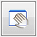

Review drawing comparison results
When you compare two sheets, the differences between them are measured in pixels that changed. Pixel changes can occur when something is added or removed or altered anywhere within the sheet boundary.
-
From the File menu, choose Tools→Compare Drawings .
The Compare Drawings dialog box is displayed.
-
In the Open Existing Comparison section, click Browse, and then select and open the _Differences.bmp results file that you want to review.
The comparison results are loaded into the viewports labeled Differences, File 1-Original, and File 2-New.
-
Use the options in the Display section to examine the results.
-
Display one large viewport instead of four small viewports—From the Show list, select Differences Only.
All drawing geometry and other elements that are different between the two sheets are shown in the single viewport.
-
Zoom in, pan, and fit the contents in the viewport.
To
Do this
Or do any of the following
Zoom in or out.
-
Click .
-
 +drag a viewport.
+drag a viewport.
-
Click in the viewport and rotate the mouse wheel.
-
Ctrl+
 +drag
+drag
Zoom an area.
-
Click .
-
+drag around the elements.
-
Alt+
+drag
Fit the elements to the viewport.
-
Click .
-
Double-click
Pan the zoomed-in elements.
Note:Use this when elements are outside the viewport.
-
Click

. -
+drag the viewport.
-
Shift+
+drag
-
-
The elements that are different in the two input files are color coded. The default color of File 1 elements that are different is magenta; the File 2 elements that are different are blue. In the Differences viewport, turn the elements on and off.
-
To show only the changed elements in File 1 that are different, clear the File 2 Elements check box.
-
To show only the elements in File 2 that are different, clear the File 1 Elements check box.
-
-
In the Differences viewport, you can change the default colors used to display the drawing elements that are different. In the Display section, under Difference View Colors, you can:
-
Change the background color of the Differences viewport from white to black using the Background color list.
-
Change the line colors used to display File 1 and File 2 elements. You can set these independently by clicking the corresponding color lists for File 1: and File 2:.